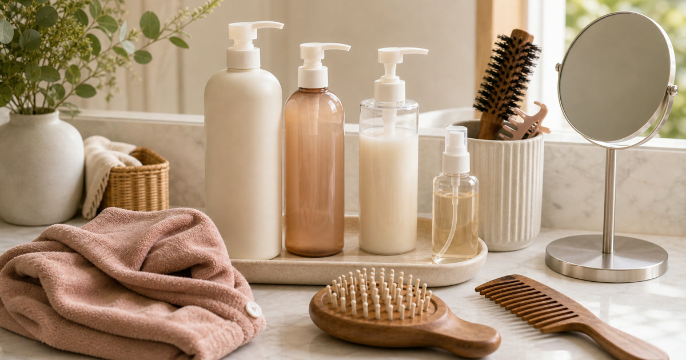

頭皮與髮品整理：洗髮、染護、造型與按摩梳的選擇
頭皮與髮品整理要先分洗、護、染、造型與工具，避免浴室檯面被瓶罐佔滿。

髮品最容易從一瓶洗髮精長成一整排瓶罐：染護、造型、補色、頭皮梳、化妝箱周邊都各有理由。真正該先做的不是補貨，而是把使用頻率、保存位置和清潔方式分清楚。台灣浴室常有濕氣與檯面不足問題，若沒有先分區，再貴的髮品也很容易被放到過期或用不完。
先分每天用和每週用
每天用的洗護品要放在最容易拿的位置，染護或造型用品則可退到第二層。
Apode、CLOEE 與卡雅仕 KYOGOKU 可放在洗護與染護情境裡比較；本文不宣稱修復、生髮或醫療效果。
Elite Fashion 編輯團隊的具體判斷是：髮品整理先分洗、護、染、造型與工具，不把浴室檯面當展示架。 這讓 Apode 歐美專業髮品、CLOEE 品牌旗艦店 與其他選項能被放回同一個生活問題裡比較，而不是只看單一商品照片。
下單前仍要回商品頁確認規格、尺寸、材質、活動、庫存與配送；若資訊不足，先暫緩，比把不確定的物品帶回家更成熟。
- 先確認使用位置與拿取頻率。
- 再看保存、清潔、線材或收納條件。
- 最後才比較品牌、活動與預算。
工具要比瓶罐更重視清潔
按摩梳、造型梳和化妝箱若沒有清潔節奏，很容易成為浴室裡被忽略的物件。
MPB巴黎小姐、SANSUI 山水與 GINGER MAKE UP 可作為工具與收納補充參考。
Elite Fashion 編輯團隊的具體判斷是：髮品整理先分洗、護、染、造型與工具，不把浴室檯面當展示架。 這讓 Apode 歐美專業髮品、CLOEE 品牌旗艦店 與其他選項能被放回同一個生活問題裡比較，而不是只看單一商品照片。
下單前仍要回商品頁確認規格、尺寸、材質、活動、庫存與配送；若資訊不足，先暫緩，比把不確定的物品帶回家更成熟。
- 先確認使用位置與拿取頻率。
- 再看保存、清潔、線材或收納條件。
- 最後才比較品牌、活動與預算。
Elite 嚴選
染護用品要看使用限制
補色、染護或造型用品應看成分、停留時間、使用頻率和保存方式，不要只看色感照片。
成分、使用限制、過敏提醒與保存方式請以商品頁和包裝為準。
Elite Fashion 編輯團隊的具體判斷是：髮品整理先分洗、護、染、造型與工具，不把浴室檯面當展示架。 這讓 Apode 歐美專業髮品、CLOEE 品牌旗艦店 與其他選項能被放回同一個生活問題裡比較，而不是只看單一商品照片。
下單前仍要回商品頁確認規格、尺寸、材質、活動、庫存與配送；若資訊不足，先暫緩，比把不確定的物品帶回家更成熟。
- 先確認使用位置與拿取頻率。
- 再看保存、清潔、線材或收納條件。
- 最後才比較品牌、活動與預算。
常見錯誤：先買新品再整理舊品
先把已開封、很少用和不確定用途的用品分出來，再決定是否補貨。
Elite Fashion 編輯團隊的判斷是：浴室檯面越清楚，髮品越容易真的被用完。
Elite Fashion 編輯團隊的具體判斷是：髮品整理先分洗、護、染、造型與工具，不把浴室檯面當展示架。 這讓 Apode 歐美專業髮品、CLOEE 品牌旗艦店 與其他選項能被放回同一個生活問題裡比較，而不是只看單一商品照片。
下單前仍要回商品頁確認規格、尺寸、材質、活動、庫存與配送；若資訊不足，先暫緩，比把不確定的物品帶回家更成熟。
- 先確認使用位置與拿取頻率。
- 再看保存、清潔、線材或收納條件。
- 最後才比較品牌、活動與預算。
下單前清點四格
洗、護、染、工具四格都填完，再看哪一格真的缺少。
價格、規格、活動、庫存與配送請以下單前商品頁公告為準。
Elite Fashion 編輯團隊的具體判斷是：髮品整理先分洗、護、染、造型與工具，不把浴室檯面當展示架。 這讓 Apode 歐美專業髮品、CLOEE 品牌旗艦店 與其他選項能被放回同一個生活問題裡比較，而不是只看單一商品照片。
下單前仍要回商品頁確認規格、尺寸、材質、活動、庫存與配送；若資訊不足，先暫緩，比把不確定的物品帶回家更成熟。
- 先確認使用位置與拿取頻率。
- 再看保存、清潔、線材或收納條件。
- 最後才比較品牌、活動與預算。
同主題品牌參考
FAQ
頭皮梳需要每天用嗎？
不一定。要看個人習慣、工具清潔方式和商品標示。
染護用品需要看哪些資訊？
本文不宣稱修復、生髮、治療或醫療效果，成分、限制與保存方式以商品頁為準。
髮品怎麼避免越買越多？
先把每天、每週和很少使用的品項分開，再補真正缺口。
下一步建議
頭皮與髮品整理要先看使用頻率、清潔與保存，再比較洗髮、染護、造型與按摩梳。 先用本文順序縮小範圍，再回商品頁確認規格、價格、活動與庫存。
重要警語
本文含品牌／商品導購連結；商品資訊、價格、規格、活動與庫存請以商品頁公告為準。髮品與頭皮用品不宣稱生髮、治療、修復或醫療效果；成分、使用限制與標示請以商品頁及包裝為準。
本文含品牌／商品導購連結；若你透過部分商品連結前往選購，Elite Fashion 可能取得合作收益。本文仍以編輯判斷與使用情境整理為主，價格、規格、活動與庫存請以商品頁公告為準。